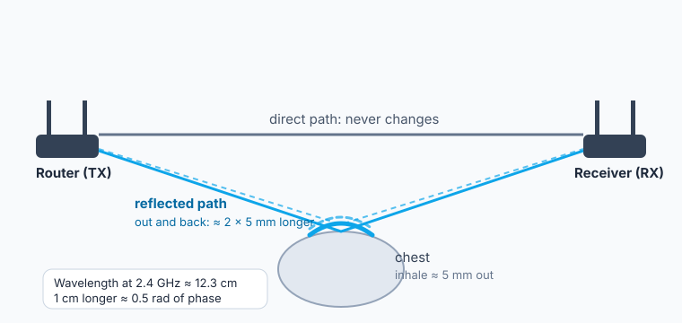
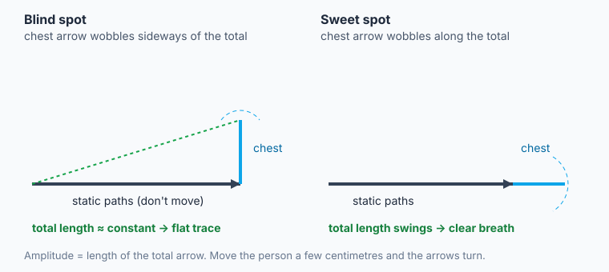
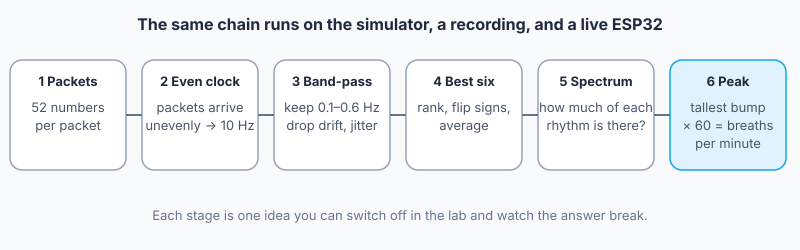

Physics · Waves & Signals
Seeing Breath in Wi-Fi
A Wi-Fi receiver estimates how radio waves arrived so it can decode packets. Chest motion can change that estimate in a small, repeating way. In this lesson you will model why, estimate a breathing rate from simulated data, and explore an experimental ESP32 setup.
What the physics allows, and what it doesn't
Before building anything, sort what Wi-Fi sensing can plausibly do from what needs more evidence. Each row is something you will test in the labs below.
| Statement | Status | Why |
|---|---|---|
| A breath can change the Wi-Fi channel. | Supported | Chest and body motion can alter reflected paths. The path change depends on the transmitter, receiver, and person's positions; it can be close to zero. |
| The breathing rhythm can be recovered from the signal. | Supported, with conditions | It works best for one person sitting still, a few metres from the link, over tens of seconds. You will see where it breaks. |
| Heartbeat can be read the same way. | Much harder | Heart-related motion is usually smaller than breathing motion; separating it from breathing, other movement, and receiver noise needs a more capable setup and validation. |
| Many people can be tracked across a large building at once. | Needs strong evidence | Nothing in this lesson's physics scales up to that by itself. Many people moving, walls, and furniture all add paths. A claim like this needs measured accuracy, a described test setting, and a method. |
What a Wi-Fi chip actually measures
A legacy 20 MHz Wi-Fi OFDM signal has 52 occupied subcarriers spaced 312.5 kHz apart: 48 carry data and four are pilots. The receiver estimates a complex channel response for subcarriers to decode packets. Its magnitude and angle are called amplitude and phase; phase is not a direct clock measurement of travel time. Those estimates are Channel State Information, or CSI. This lesson's ESP32 sketch exports 52 magnitudes from the legacy training field, including pilot positions, and discards phase.
Radio does not take one path. It goes straight from router to receiver, and it also bounces off walls, desks, and people. The receiver sees the sum of all those paths. Paths that arrive in step reinforce each other. Paths that arrive out of step cancel. That is interference, the same idea as the Huygens lesson, happening inside your room.

Worked example: how big is the signal?
Step 1. Wavelength. At 2.437 GHz (channel 6): λ = c / f = 299,792,458 / 2,437,000,000 ≈ 0.123 m = 12.3 cm.
Step 2. Path change. The chest moves 5 mm. For router → chest → receiver, the change is approximately the displacement dotted with the sum of the two unit directions from the devices toward the chest. Its magnitude is 0–10 mm depending on geometry. The 10 mm case is an upper bound, approached when both devices are in nearly the same direction from the chest.
Step 3. Reflected-path phase. At that upper bound, Δφ = 2π × Δpath / λ = 2π × (0.010 / 0.123) ≈ 0.51 rad, about 29°. This is the change in one reflected component; the measured CSI is the sum of all paths, so its amplitude or phase need not change by that amount.
Step 4. Try 5 GHz. At 5.18 GHz, λ ≈ 5.79 cm. For the same 10 mm path change, the reflected component rotates by about 1.09 rad. Phase change per millimetre is larger, but signal strength and sensing quality do not automatically improve. The ESP32 recipe is 2.4 GHz only.
Step 5. Smaller motion. If motion were 0.3 mm in the same favorable geometry, the upper-bound reflected-path change would be 0.6 mm: about 0.031 rad at 2.437 GHz. This is a comparison of motions, not a promised heartbeat measurement.
Check yourself. For the same reflected-path change, switching from about 2.4 GHz to about 5 GHz makes the reflected component's phase rotation…
Room lab: watch a breath move the signal
This is a simulated 4 × 2.4 m corner of a room. The model samples 20 times a second and computes a simplified amplitude for each subcarrier. The blue line is its noisy output; the dashed gold line is the known chest motion. Drag the person (or click the room and use the arrow keys). The controls are just below the graphs.
Predict first. The wavelength here is about 12 cm. If you slide the seated person a few centimetres at a time, with their breathing unchanged, what happens to the size of the breathing wave?
Radio
Person
Signal
Try this, in order
- Match. In this model, compare the blue amplitude with the known gold chest motion. Their shapes can match, invert, or diverge. Raise Noise until you cannot tell.
- Move. Drag the person a few centimetres at a time. The wave gets bigger, smaller, even flips upside down. Nothing about the breathing changed.
- Map it. Set Sensitivity map to "This subcarrier". Bright stripes are places where a breath is easy to see; dark stripes are blind spots. Compare the stripe spacing to the wavelength bar.
- Compare. Switch the map to "Best of 13 sampled subcarriers". The model displays the strongest response among those 13 at each position. Each map rescales its own brightest point to the same color, so compare the pattern, not absolute brightness. Nearby subcarriers can differ because multipath is frequency selective, but all 52 occupy only about 16 MHz; they cannot remove every geometric blind spot.
- Band. Switch to 5 GHz. The model's spatial pattern changes with wavelength. A larger phase rotation does not guarantee a larger measured amplitude.
- Interrupt. Press Someone walks by. What happens to the trace?

Decode lab: from 52 wiggling numbers to "16 breaths per minute"
Raw CSI may contain a repeating component. The processing chain estimates its strongest rate; the number alone does not establish that a person is breathing. Pick a data source, then switch steps off to see what each one changes.

This browser can't talk to USB devices from a page (Web Serial). Use Chrome or Edge on a laptop for the live ESP32 link. Everything else on this page works anywhere.
Experiments
Use Practice recording, then uncheck the band-pass. The tallest bump is now slow drift, not breathing. That is why the filter exists.
Uncheck "best 6" and slide through subcarriers. Some are cleaner than others in this model. Combining can help, but selecting by energy can also select a fan or passing person.
In the practice recording someone walks through the link area at 40 s. Drag the playhead from 35 s to 90 s. Does the peak-strength indicator react? Can an incorrect rate still look convincing? (Hint: how long is the window?)
Try 15 s, 30 s, 45 s. Shorter is faster but each peak in the spectrum gets wider. What is the trade?
Challenge: the mystery breather
The computer hides its answer. Read the spectrum (x is breaths per minute) or count the gold dots on the filtered signal, then type your estimate.
Recipe: do it for real with an ESP32
An ESP32 can export CSI magnitudes to the Decode lab over USB. This is an experimental classroom recipe, not a validated breathing monitor. Board support, packet rate, and usable sensitivity vary by board, firmware, access point, and room. Test your exact setup before class. No camera or wearable is required.
You need
- Set up the Arduino IDE. Install Arduino IDE 2. In Boards Manager install esp32 by Espressif Systems. In Library Manager install ESP32Ping. Pick your board under Tools > Board. On S3/C3 boards with a native USB port, set USB CDC On Boot to Enabled. (New to this? Do Sensor to Webpage first; it uses the same Web Serial link.)
- Load the sketch. Copy the code below into a new sketch, or download esp32_csi_stream.ino. Put your Wi-Fi name and password at the top. Don't share or publish a sketch that has your password in it.
- Upload and look. Press Upload. Open the Serial Monitor at 921600 baud. You should see a wall of lines starting with
C,. If you do, the radio is working. Close the Serial Monitor now; it holds the port and the page can't open it. - Connect the page. In the Decode lab press Connect ESP32 and choose your board. Check the measured packet rate; it need not be 40–50 per second. The 52-row heat map should fill in from the right.
- Set the stage. Put the ESP32 on a table. The router stays where it is, 1–3 m away. Sit the person between them, about half a metre off the straight line, facing it. Sit still, breathe normally, don't touch the table. Wait 30 seconds for the window to fill.
- Check against reality. Count visible breaths for a full minute or use a reliable reference, repeat in several positions, and compare with the page. Record misses and false peaks as well as matches. Do not treat a rate from this page as a health measurement.
The sketch
// esp32_csi_stream.ino: stream Wi-Fi Channel State Information (CSI) over USB.
// Board: ESP32, ESP32-S3 or ESP32-C3 (2.4 GHz). Arduino IDE: Boards Manager "esp32 by Espressif" 3.x,
// Library Manager "ESP32Ping". Tools > USB CDC On Boot: Enabled (S3/C3 with native USB).
//
// How it works: CSI is estimated from received packets. This sketch requests router replies with
// pings; the rate is variable and below 50/s when ping and serial work add to the 20 ms gap.
// Each accepted measurement becomes one line:
// C,<seq>,<ms>,<rssi>,<a1>,<a2>, ... <a52>
// where a1..a52 are the strengths of the 52 subcarriers (lower frequency first).
// The lesson page, or analyze_breathing.py, turns that stream into breaths per minute.
#include <WiFi.h>
#include <ESP32Ping.h>
#include "esp_wifi.h"
const char* WIFI_SSID = "YOUR_WIFI_NAME"; // your own network, or a phone hotspot you control
const char* WIFI_PASS = "YOUR_PASSWORD";
const int PING_GAP_MS = 20; // minimum gap after each ping and serial flush
struct Sample { uint32_t ms; int8_t rssi; uint8_t amp[52]; };
static QueueHandle_t queue;
static uint8_t routerMac[6];
static uint32_t seq = 0;
// Runs in the Wi-Fi task for every received packet. Keep it short: copy numbers, no printing.
static void onCsi(void* ctx, wifi_csi_info_t* info) {
if (!info || !info->buf || info->len < 128) return;
if (memcmp(info->mac, routerMac, 6) != 0) return; // only packets from our router
Sample s;
s.ms = millis();
s.rssi = info->rx_ctrl.rssi;
// Legacy long training field: 64 complex values, bytes are [imaginary, real].
// Order in the buffer is k = 0..31, then -32..-1. We keep k = -26..-1 and 1..26.
int n = 0;
for (int k = -26; k <= 26; k++) {
if (k == 0) continue;
int idx = (k < 0) ? 64 + k : k;
float im = info->buf[2 * idx];
float re = info->buf[2 * idx + 1];
s.amp[n++] = (uint8_t)min(255.0f, sqrtf(re * re + im * im));
}
xQueueSend(queue, &s, 0); // drop the sample if the queue is full
}
void setup() {
Serial.begin(921600); // enough bandwidth for short CSV lines
queue = xQueueCreate(32, sizeof(Sample));
WiFi.mode(WIFI_STA);
WiFi.setSleep(false); // a sleeping radio skips packets
WiFi.begin(WIFI_SSID, WIFI_PASS);
while (WiFi.status() != WL_CONNECTED) delay(250);
memcpy(routerMac, WiFi.BSSID(), 6);
wifi_csi_config_t cfg = {};
cfg.lltf_en = true; // use the legacy training field (always 64 values)
cfg.htltf_en = false;
cfg.stbc_htltf2_en = false;
cfg.ltf_merge_en = false;
cfg.channel_filter_en = false; // false = no smoothing between neighbouring subcarriers
cfg.manu_scale = false;
cfg.shift = 0;
esp_wifi_set_csi_config(&cfg);
esp_wifi_set_csi_rx_cb(&onCsi, NULL);
esp_wifi_set_csi(true);
Serial.println("# CSI streaming. Sit still, breathe normally, keep 1-3 m from the router.");
}
void loop() {
Ping.ping(WiFi.gatewayIP(), 1); // make the router send us a packet
Sample s;
while (xQueueReceive(queue, &s, 0) == pdTRUE) {
Serial.printf("C,%lu,%lu,%d", (unsigned long)seq++, (unsigned long)s.ms, s.rssi);
for (int i = 0; i < 52; i++) Serial.printf(",%u", s.amp[i]);
Serial.println();
}
delay(PING_GAP_MS);
}How the sketch works
- CSI is estimated from received packets. The loop requests router replies with pings; network and serial delays make the actual sample rate variable.
onCsi()runs inside the Wi-Fi task. It copies 52 occupied legacy subcarrier positions, including four pilot positions, and turns each complex pair into an amplitude. Printing happens later, inloop(), from a queue.- It ignores packets that did not come from the connected access point and disables the chip's adjacent-subcarrier smoothing. Subcarriers still share the same physical paths and are correlated.
- Each packet becomes one text line:
C,seq,ms,rssi,a1…a52. Plain text is easy to read, save, and debug. At 921600 baud it fits.
Experiments to run
Slide the chair 5 cm at a time. Watch the peak-to-median ratio and compare each estimate with a counted reference. Does the signal change with position?
Breathe normally, then at a comfortable slower or faster pace. Does the estimated peak follow? Compare it with a counted reference.
Increase the distance. Put a laptop or a book between you and the line. What loses signal first?
Tap a foot, then type. Which motions are slow enough to hide in the breathing band?
Press Save recording, then run python analyze_breathing.py wifi-sensing-serial.csv (needs numpy, scipy, matplotlib). Does the Python answer match the page?
Save the Practice recording and run the Python script on it. You get the whole analysis path without hardware.
If it doesn't work
- No
C,lines: wrong Wi-Fi name or password, a 5 GHz-only network, or the board isn't running (press its reset button). Lines starting with#are only notes. - Garbled characters: the Serial Monitor must be set to 921600 baud.
- "Could not open the port": something else has it. Close the Arduino Serial Monitor and other serial apps.
- Low or irregular packet rate: check whether the router replies to pings and whether serial output is keeping up. A smaller
PING_GAP_MScannot fix router, radio, or serial bottlenecks. - Peak jumps around: something is moving. Check for a fan, a person walking, or you shifting in the chair. Compare with the walker experiment in the Decode lab.
- Code won't compile: the CSI settings have changed between ESP32 chip families. This sketch is written for the classic ESP32, S3, and C3. Newer chips (C5, C6) use a different settings structure.
Reality check and responsibility
What you now know about the limits
- Geometry decides. Blind spots are physics, not a bug. Good systems use many subcarriers, more than one receiver, or both.
- Motion is the enemy. Anything moving in the band 6–36 breaths per minute looks like breathing to the maths. A fan can fool it.
- Averaging can reduce random noise. A 30-second window is a design choice: longer gives finer frequency resolution but also mixes more motion into the result.
- Going from "one person in a quiet room" to "many people across a building" is a different problem, not a bigger version of this one. Count how many things the Room lab had to hold still.
Discuss
- Radio can pass through some walls, depending on wall material, frequency, and link strength. How should privacy be handled even when there is no camera?
- Useful: a sleep monitor with nothing to wear, or a way to notice that someone in a care home has stopped moving. Harmful: knowing who is in a room, or when. What rules would let the first and prevent the second?
- Who should be told, and who should agree, before a building's Wi-Fi is used this way?
- Back to the table near the top: write what measurement you would want for each row.
Related: Digital Signal Processing (filters and the Fourier idea), Fourier Series, Huygens' Principle (interference), Room Acoustics (the same multipath idea with sound).
Evidence and model limits
The room simulation represents each path as one complex wave and assumes a single chest reflection plus fixed background paths. Its colors and estimated rates are model outputs, not measurements from a real room. The live recipe uses CSI amplitude only; it does not identify which physical path changed. Repeated comparison with an independent breath count is needed before making a performance claim.
- Espressif, ESP32 Wi-Fi CSI guide: CSI buffer order, training fields, signed complex samples, and the 52 occupied legacy subcarriers (48 data and four pilots).
- Monitoring Respiratory Motion With Wi-Fi CSI (IEEE Access, 2022): experimental feasibility, assessment, and failure factors.
- Device-Free Multi-Person Respiration Monitoring Using WiFi (IEEE Transactions on Vehicular Technology, 2020): multiple people require more advanced separation than this one-link lesson provides.
Practice
1. Which path changes when you breathe?
2. Why can the same person show a clear breath in one seat and a flat line one chair-width away?
3. The spectrum's tallest peak is at 0.25 Hz. How many breaths per minute?
4. Why band-pass between 0.1 and 0.6 Hz?
5. Why does the page average the best six subcarriers instead of trusting one?